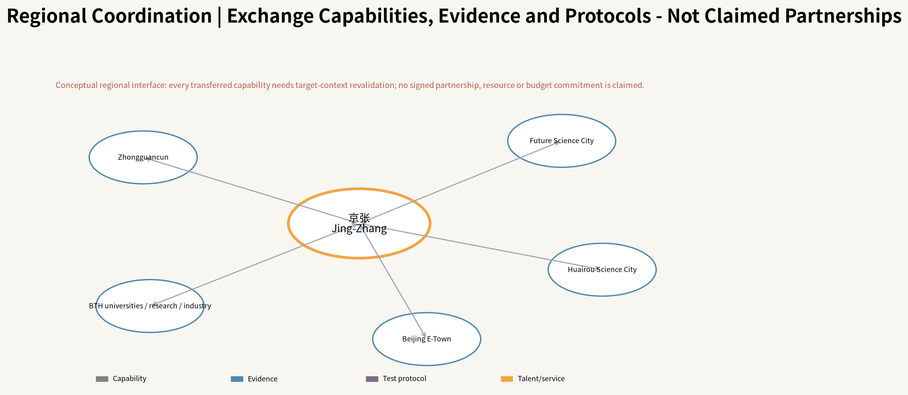
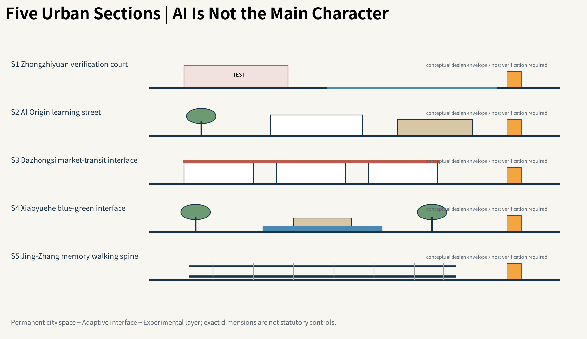

Jing-Zhang Urban Capability Exchange / 京张·城市能力交换带
A city-scale operating system that lets Jing-Zhang continuously diagnose urban problems, run reversible tests, evaluate public value, exchange validated capabilities, and retire obsolete technology through a Capability Backbone, Public Capability Interfaces, Urban Adaptation Rate, and an annual City Version Release.
Jing-Zhang Urban Capability Exchange
Thesis: Jing-Zhang is not a city filled with AI; it is an urban operating system that continuously produces, exchanges, tests, improves and retires public capabilities.
This is an AI-Agent-generated open co-creation proposal. Final judgment, professional deepening and statutory procedures remain human responsibilities.
Design Basis and Source List
The proposal treats the Centennial Jing-Zhang corridor as a city-scale public-capability operating system. AI enters the city only through diagnosed problems, risk authorization, reversible tests, public-value review, capability exchange and retirement. The three official positioning themes, five functions and Three Areas / Two Wings remain fixed taskbook objectives; this proposal supplies an urban and governance mechanism for them. 来源 来源
SITE_BOUNDARY and all three KEY_AREA polygons remain provisional constraints. Evidence provenance (Official / Verified / Derived / Assumed / Unknown) is kept separate from drawing status (Known / Estimated / Proposed / Unknown). Exact organizer polygons, statutory controls, ownership, road redlines, heritage, utilities and a complete existing-building survey must trigger recalculation. 来源 [assumption:A-BOUNDARY-001]

Three-Level Scope Framework
The approximately 43.6 km² coordinated research scope addresses ecosystem and regional cooperation; the approximately 11.4 km² overall-design scope addresses urban structure, public space and renewal; the three key areas carry perceptible detailed design. The task-text reference areas of 192.1/104.3/72.0 ha remain separate from the provisional polygon calculations. 指标 [assumption:A-KEY-AREA-001]
The spatial grammar is one Capability Backbone plus five differentiated Learning Units. The Backbone is not a proposed new road: it combines memory, walking/accessibility, public realm, blue-green ecology, capability nodes and event/operations layers. 指标 空间数据

Coordinated Research Area: Industry and Future City Research
The five units specialize by actual resource logic: Zhongzhiyuan for technical production and higher-risk validation; AI Origin for social learning, talent daily life and public service; Dazhongsi for market and AI-native service validation; Zhongguancun Technology Service Wing for IP/capital/legal/standards/global services; Xiaoyuehe for blue-green public-life and low-risk real-city testing. Current official public material supports these role directions, not precise competition polygons. 来源 来源 来源
Six global cases are translated as mechanisms rather than copied forms: Punggol living labs, Seoul digital inclusion, Enabling Village universal design, Woven City real-world testing, Decidim traceable participation and Kalasatama everyday mixed urbanism. Jing-Zhang adds public value, failure disclosure, human alternatives, transfer revalidation and retirement. 来源 来源 来源
Regional coordination is a capability-exchange interface, not an institution list. Jing-Zhang may exchange validated urban capabilities, test protocols, evidence and talent/service mechanisms with Zhongguancun, Future Science City, Huairou Science City, Beijing E-Town and the wider Beijing-Tianjin-Hebei university/research/industry network, but every transfer requires target-context revalidation. No signed partnership or resource commitment is claimed. 来源
Regional coordination is shown as capability exchange rather than an institution collage. Zhongguancun, Future Science City, Huairou Science City, Beijing E-Town and wider Beijing–Tianjin–Hebei networks are target contexts for transfer; every transfer requires renewed checks of fit, equity, risk and public value, with no claim of signed institutional commitment.

Overall Design Area: Urban Renewal and Regulatory-Plan-Level Urban Design
The Capability Backbone uses the real public-space relationship of the historic Jing-Zhang corridor, but every crossing passes an evidence gate. Until roads, rail, water, heritage and rights-of-way are verified, drawings show a required connection relationship rather than an invented bridge, tunnel or statutory route. 空间数据 [assumption:A-ROAD-001]
Urban construction is divided into Permanent / Adaptive / Experimental layers. Permanent elements keep ordinary walking, shade, accessibility, lighting, fire safety and non-AI services. Adaptive elements are replaceable interfaces and furniture. Experimental elements require bounded time/space, a nonparticipant bypass, human stop authority and removal conditions. [assumption:A-NONAI-001] 空间数据
Five typical sections translate the masterplan into vertical relations among ordinary walking, shade, railway memory, PCI, slow-mobility stitches and reversible tests. They test whether the city works first and only then locate AI interfaces; they are urban-design intentions, not road-redline, utility, structural or survey drawings.

Detailed Design of Key Areas
Zhongzhiyuan - Verification Campus. Higher-risk tests are isolated, observable and reversible without interrupting ordinary work and walking.
AI Origin - Learning Neighborhood. Public service, accessibility, talent daily life and community co-creation come first; personal or recognition functions require a Consent Layer.
Dazhongsi - Market & Service Commons. Mixed commuters, merchants, couriers, residents and visitors provide a real service-validation environment instead of a closed technology park. Exact hosts remain subject to official polygons, ownership and existing-building evidence. 空间数据 空间数据 [assumption:A-CONTROLS-001]

AI Innovation Ecosystem, Personas, and AI+ Scenarios
A Public Capability Interface (PCI) is a six-layer civic contract: Non-AI Baseline / Ambient Layer / Consent Layer / Human Override / Failure-Safe Mode / Public Learning Record. It is not a kiosk typology. Shade, seating, access, staffed service and emergency procedure must work before AI is added. 指标 空间数据
Eight personas are evaluated: researchers/entrepreneurs; students/developers; local families; older users; disabled/low-vision/deaf users; couriers/cleaners/security/frontline operators; merchants/service operators; international visitors/industry partners. 指标
Twelve scenarios cover cultural interpretation, accessible routing, multilingual service, safe night return, developer opportunity discovery, education, non-diagnostic health navigation, last-mile robot testing, low-speed autonomous-vehicle testing, edge-compute/energy tests, heat/storm response and public-proposal traceability. Four are explicit bounded test/validation scenarios. 指标 指标
The three registered scenario IDs used for repository discovery are public-safety-operations-review, ai-traffic-walkability, and enterprise-service-copilot. The twelve project scenario cards subdivide these civic tasks and add railway culture, accessibility, multilingual service, heat/storm response, bounded autonomous tests and proposal traceability. The registry supports discoverability; the twelve cards provide project-specific spatial testing and public-value evaluation.

Land Use, Building Scale, and Retain-Renovate-Demolish Strategy
The land-use mosaic is a conceptual urban-design structure linking research, education, community services, commerce, culture, green space and reversible reserve; it is not a statutory zoning change. BUILDING_FOOTPRINT contains only proposed reversible public-service pavilion envelopes, not fabricated existing buildings. 空间数据 空间数据
Total floor area, FAR, existing floors/heights, ownership and full retain/renovate/demolish decisions remain Unknown. Existing-building evidence should be promoted only after OSM, Microsoft ML footprints, official material and field checks are cross-validated. 指标 [assumption:A-BASEMAP-001]
Transport, Rail, Municipal Infrastructure, and Public Services
ROAD-001 is a continuity study axis; ROAD-002–006 are east-west stitch study axes. They express a design problem rather than confirmed roads, bridges, tunnels or engineering redlines. A published Dazhongsi road-opening fact is context, not an area-wide mobility conclusion. 来源 [assumption:A-ROAD-001]
Municipal capacity, fire, underground utilities, drainage, flood, structure and energy remain incomplete. The 2026 Xiaoyuehe water and utility works make construction/ecology/safety checks prerequisites for any blue-green test node. 来源 来源

Blue-Green Network, Public Space, and Urban Character
Public space follows a city first, AI backstage Public Service Aesthetic. Double tracks, stations, switches and mileposts become capability flow, open nodes, switching and version memory rather than retro railway decoration or cyberpunk AI imagery. Blue-green design first delivers shade, thermal comfort, stormwater, walking, children/older users and emergency use, then adds sensing or orchestration. 来源 空间数据
The same spaces operate as an 8AM–MIDNIGHT Adaptive Commons for commuting, midday rest, children/older users, night culture, markets, extreme weather and emergencies, while node roles remain differentiated.
Three time landmarks make the Centennial Jing-Zhang story inhabitable: 1909 Railway Memory preserves engineering and material traces; 2026 Learning Archive publishes trials, modifications, failures and public-value evidence; Future Experiment Station hosts unresolved questions. A Retired Archive records systems, devices and capabilities that were stopped, replaced or deliberately retired so that Responsible STOP becomes civic learning rather than hidden failure.
What should remain after twenty years is not a particular model: it is ordinary public space, physical railway DNA, open interfaces and risk protocols, a traceable urban-learning record, and a non-AI baseline that keeps the city usable when technology fails.


Renewal Projects, Implementation Policy, and Phasing
Implementation is no longer three blanket time polygons. Every component is tagged Permanent / Adaptive / Experimental and given a reversibility field. A proposed annual rhythm is Q1 Diagnose → Q2 Sandbox/Authorize → Q3 Trial/Transfer → Q4 Evidence/Release. The annual City Version Release discloses Added, Modified, Scaled, Responsible STOP, Retired, unresolved problems and evidence changes. 空间数据 [assumption:A-INSTITUTION-001]
Public Stewardship retains final accountability for rules, authorization, data governance, public-value judgment, incidents and STOP/MODIFY/CONTINUE/SCALE/RETIRE decisions. Universities, companies, developers and citizens contribute through separate Problem and Capability Tracks.
Long-term operation should maintain four resource ledgers: (1) non-AI baseline services and ordinary public realm; (2) challenge, sandbox and small-pilot resources; (3) maintenance, human alternative, migration and exit reserve; and (4) independent audit, affected-group participation and annual version-release resources. These are governance proposals, not claims of existing budgets, procurement or operators. [assumption:A-INSTITUTION-001]
The City Version Release is an annual public-audit interface rather than a promotional screen. It discloses Added / Modified / Scaled / Responsible STOP / Retired items, evidence changes, complaints and human takeover, unresolved problems and the next challenge cycle.

Metrics, Area Recalculation, and Compliance Matrix
The flagship Urban Adaptation Rate (UAR) does not count AI deployments. It asks what share of qualified eligible urban problems achieve verified public-value improvement within a pre-registered evaluation horizon. Raw Agent detections do not enter the denominator; a Responsible STOP is valuable learning/safety but not automatically adaptation of the underlying problem. 指标 [assumption:A-GOV-OPS-001]
Common public-value floors cover safety, equity, privacy, environment, cost and human override, while each scenario adds 2–4 measurable outcomes. Public dashboards also show failures, complaints, manual takeover, extremes, vulnerable-group gaps and unresolved cases. Current geometric values are reproducible but remain limited by provisional/design geometry status. 指标 指标

Risk, Copyright, and Compliance
This is an open co-creation proposal, not a government determination, statutory plan, investment commitment, engineering permit or construction basis. Real personal-data, automated-decision, algorithm, generated-content, safety and accessibility obligations require deployment-specific legal/professional review; the risk matrix is only an urban-governance design interface. 来源 [assumption:A-INSTITUTION-001]
All diagrams, SVG, HTML and PDFs in this package are programmatically generated for the proposal and use no third-party photographs, commercial map tiles, remote fonts or tracking. OSM and Microsoft source/licence records are included, but live materialization could not run in this execution environment, so no un-downloaded dataset is presented as Verified existing conditions. 来源 来源
References
Complete provenance, licence, dates, permitted uses and limitations are in sources.json; metrics and formulas are in metrics.json; spatial state is in GeoJSON; task, standard and design-depth coverage are in the three matrices. The v2 narrative keeps only claim-adjacent evidence anchors for human readability. 来源 来源
The evidence system separates factual sources, design derivations, reproducible metrics and unresolved data gaps instead of treating all links as equal authority. sources.json records publisher, URL, retrieval date, licence, permitted use and limitations; every GeoJSON feature distinguishes official/provisional/existing/design roles; metrics.json marks only geometry- or formula-reproducible values as known, while FAR, complete building stock, statutory heights, municipal capacity and live UAR remain Unknown. OSM was live-materialized through Overpass on 2026-08-09: 5532 usable features inside the provisional envelope, including 1898 building polygons. They are promoted only to candidate existing-condition evidence, never to official survey or statutory geometry. The Microsoft 2026-07-24 published partition index was also queried live (HTTP 200, 30340 rows), but it contains 0 exact partition for target L9 quadkey 132100103 and 0 China rows; therefore no site Microsoft building partition is currently available and no OSM↔Microsoft building match rate is manufactured. When exact organizer SITE_BOUNDARY / KEY_AREA polygons, statutory controls, ownership, complete buildings, road redlines, heritage and utilities become available, Source Triangulation must revalidate geometry, metrics, the five primary diagrams, sections and exact key-area hosts, with changes recorded in the City Version Release. The narrative keeps claim-adjacent anchors; sources.json, assumptions.json, the three matrices and self_check.json carry the full audit trail. 来源 来源
The live open-basemap audit is recorded separately: 5532 OSM features / 1898 building polygons were materialized, while the current Microsoft index publishes no partition for 132100103. Both results remain evidence for verification queues and design context, not official planning facts. 来源 来源